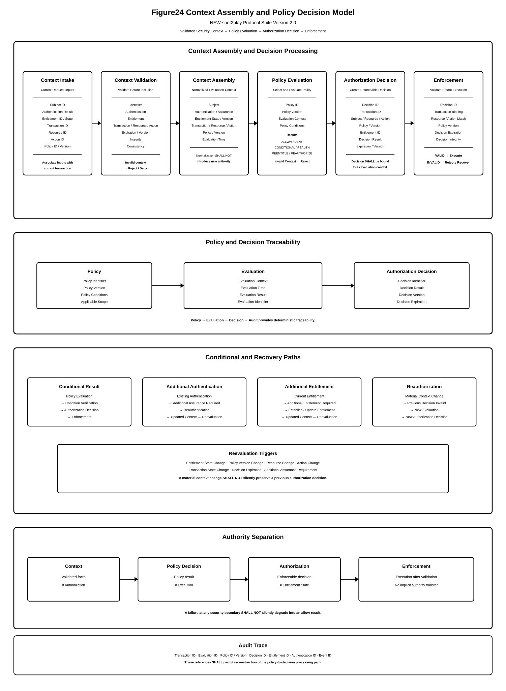

Chapter 06 — Policy Evaluation
This chapter defines the Policy Evaluation Layer of the NEW-shot2play Protocol Suite Version 2.0.
The Policy Evaluation Layer determines whether the conditions applicable to an authorization request are satisfied by evaluating the authenticated identity, applicable Entitlement state, authorization request, and authorization context against the applicable Policy.
Policy Evaluation SHALL determine whether the conditions governing an authorization request are satisfied. Policy Evaluation SHALL NOT be treated as equivalent to Authentication.
6.1 Purpose and Scope
The purpose of the Policy Evaluation Layer is to provide a deterministic and auditable mechanism for evaluating authorization conditions before an Authorization Decision is generated.
This chapter defines:
- Policy Object;
- Policy Identifier;
- Policy conditions;
- Policy inputs;
- Authorization Context;
- condition evaluation;
- multiple-condition evaluation;
- policy precedence;
- policy conflict handling;
- evaluation failure handling;
- policy versioning;
- policy state;
- evaluation traceability; and
- interaction with Authorization.
The Policy Layer SHALL operate between the Entitlement Layer and the Authorization Layer in accordance with the Version2.0 architecture.
6.2 Policy as a Protocol Object
A Policy SHALL be represented as an identifiable logical object.
A Policy defines one or more conditions governing whether a specified action is permitted for a specified subject, entitlement, resource, service, or context.
The Policy Object SHALL be logically distinguishable from:
- Identity Object;
- Credential Object;
- Authentication Object;
- Entitlement Object;
- Authorization Object; and
- Service Object.
A Policy MAY reference other protocol objects as evaluation inputs without becoming identical to those objects.
6.3 Policy Identifier
Each Policy Object SHALL have a Policy Identifier that uniquely identifies the Policy within the applicable protocol scope.
The Policy Identifier MAY be referenced by:
- Authorization Requests;
- Policy Evaluation;
- Authorization Decisions;
- audit records; and
- Policy administration operations.
A Policy Identifier SHALL NOT by itself indicate that the Policy is currently active.
The authoritative Policy state and applicable Policy version SHALL be evaluated before the Policy is used for an Authorization Decision.
6.4 Policy Object Attributes
A Policy Object SHOULD contain sufficient information to permit its authoritative evaluation.
Representative attributes include:
- Policy Identifier;
- Policy Version;
- Policy State;
- Subject Conditions;
- Entitlement Conditions;
- Resource Conditions;
- Action Conditions;
- Service Conditions;
- Time Conditions;
- Location Conditions;
- Device Conditions;
- Risk Conditions; and
- Evaluation Rules.
A Service Profile MAY define additional attributes provided that their semantics remain compatible with the normative evaluation model defined in this specification.
6.5 Policy Conditions
A Policy SHALL define one or more conditions applicable to the authorization operation.
Representative conditions include:
- Subject condition;
- Entitlement condition;
- Resource condition;
- Action condition;
- Service condition;
- time condition;
- location condition;
- device condition;
- risk condition; and
- transaction condition.
A condition SHALL have an unambiguous evaluation result.
A condition MAY evaluate to:
- True;
- False; or
- Indeterminate.
Unless an applicable Policy explicitly defines another behavior, an Indeterminate condition SHALL NOT be treated as True.
6.6 Policy Evaluation Inputs
Policy Evaluation SHALL operate on the applicable inputs for the current authorization request.
Representative inputs include:
- Authenticated Identity;
- Authorization Request;
- Entitlement State;
- Policy Object;
- Authorization Context;
- Transaction State; and
- applicable external event state.
The set of required inputs SHALL be determined by the applicable Policy.
An implementation MUST NOT assume that all Policies require the same set of inputs.
6.7 Authorization Context
Authorization Context contains contextual information required by the applicable Policy for evaluating an authorization request.
Representative context includes:
- Current Time;
- Service Context;
- Device Context;
- Session Context;
- Transaction Context;
- Risk Context; and
- External Event Context.
Context information SHALL be evaluated according to the applicable Policy.
Context information SHALL NOT be treated as universally trusted merely because it was supplied by the requesting party.
6.8 Context Assembly
Before Policy Evaluation, the implementation SHOULD assemble the context required by the applicable Policy.

Context Assembly MAY combine information obtained from:
- the authenticated session;
- the Authorization Request;
- the Entitlement Object;
- the Service Object;
- the transaction state;
- trusted infrastructure; and
- other authoritative event sources.
Each context element SHOULD retain sufficient provenance to permit its authority and freshness to be evaluated.
6.9 Input Authority and Provenance
Policy Evaluation SHALL distinguish between authoritative and non-authoritative input.
An implementation SHOULD maintain provenance information for security-relevant inputs.
Representative provenance information includes:
- source identifier;
- source type;
- creation time;
- observation time;
- transaction reference;
- integrity status; and
- trust status.
Where an applicable Policy requires an authoritative input, an unverified or unauthenticated input SHALL NOT satisfy that condition.
6.10 Condition Evaluation
Each Policy condition SHALL be evaluated against the applicable current inputs.
The evaluation process SHALL determine whether the condition is satisfied for the current authorization request.
An implementation SHALL NOT substitute a historical condition result for a current result where the applicable input may have changed.
For example, an Entitlement condition SHALL be evaluated against the authoritative current Entitlement state rather than solely against the state observed when the Entitlement was originally acquired.
6.11 Multiple Condition Evaluation
A Policy MAY require multiple conditions to be satisfied.
A multiple-condition Policy MAY be represented as:
Condition A
+
Condition B
+
Condition C
+
Condition D
|
v
Policy Evaluation
|
v
Evaluation Result
Where a Policy requires all conditions to be satisfied, every required condition SHALL evaluate to True before the Policy can produce a successful evaluation result.
Where a Policy explicitly defines an alternative logical relationship, that relationship SHALL be evaluated according to the Policy definition.
An implementation MUST NOT silently change the logical relationship between Policy conditions.
6.12 Evaluation Result
Policy Evaluation SHALL produce an explicit evaluation result.
Representative results include:
- Permit;
- Deny; and
- Indeterminate.
The evaluation result SHALL be associated with the Policy Object, Policy Version, Authorization Request, and applicable evaluation context where such association is required for traceability.
An Indeterminate result SHALL NOT be interpreted as Permit unless the applicable Policy explicitly defines such behavior and the result remains consistent with the security requirements of this specification.
6.13 Policy Version
Each Policy SHALL have a Policy Version or an equivalent mechanism that permits the exact Policy definition used for an evaluation to be identified.
A Policy Version SHOULD be immutable after activation.
When a Policy definition is changed, the implementation SHOULD create a new Policy Version rather than silently modifying the semantics of an already evaluated Policy Version.
An Authorization Decision SHOULD retain a reference to the Policy Version used to generate the decision.
6.14 Policy State
A Policy SHALL have an authoritative state indicating whether the Policy is available for evaluation.
Representative Policy states include:
- Draft;
- Active;
- Suspended;
- Retired; and
- Revoked.
Only a Policy that is valid for the current evaluation SHALL be used to generate an authorization result.
A Draft, Suspended, Retired, or Revoked Policy SHALL NOT be treated as an Active Policy unless the applicable Service Profile explicitly defines such behavior.
6.15 Policy Activation
A Policy SHALL NOT become authoritative merely because a Policy Object has been created.
Policy activation SHALL establish the state under which the Policy may be used for evaluation.
An implementation SHOULD maintain:
- activation time;
- Policy Version;
- activation authority; and
- activation transaction reference.
A Policy evaluation performed before the effective activation time SHALL NOT use that Policy as an active authorization condition.
6.16 Policy Effective Time
A Policy MAY define an Effective Time and an Expiration Time.
Where such times are defined, the Policy SHALL be considered applicable only within the specified validity interval.
The implementation SHALL use an authoritative time source or a trusted time representation when time validity is security significant.
Clock uncertainty SHALL NOT be silently interpreted as proof that a time condition is satisfied.
6.17 Policy Precedence
Multiple Policies MAY apply to the same Authorization Request.
Where multiple applicable Policies exist, the implementation SHALL determine which Policy result has precedence according to an explicitly defined precedence model.
Precedence MAY be established by:
- Policy priority;
- Policy scope;
- Policy specificity;
- Policy version;
- administrative authority; or
- an explicitly defined Policy combination rule.
Precedence SHALL NOT be determined by an implementation-specific ordering that is unknown to the Policy definition.
6.18 Specificity and Generality
A Policy MAY be more specific than another Policy.
For example, a Policy applying to a specific Service and Resource may be more specific than a Policy applying to all Services of the same class.
Where specificity is used to establish precedence, the definition of specificity SHALL be deterministic and SHALL be applied consistently by all conforming implementations.
A more specific Policy SHALL NOT automatically override a higher authority Policy unless the applicable precedence rules explicitly permit such an override.
6.19 Policy Conflict
A Policy Conflict occurs when two or more applicable Policy results cannot be simultaneously satisfied under the applicable Policy combination rules.
Examples include:
- one Policy produces Permit while another produces Deny;
- two Policies impose incompatible resource restrictions; or
- Policy versions applicable to the same request produce incompatible results.
A conforming implementation SHALL apply the defined conflict resolution rule rather than selecting a result arbitrarily.
6.20 Deny Precedence
Unless an explicitly defined Policy model provides another security-equivalent rule, a Deny result SHALL take precedence over a Permit result when required authorization conditions conflict.
Where a required Policy condition cannot be established as satisfied, the implementation SHALL NOT generate an Allow result solely from the existence of another satisfied condition.
This requirement prevents an incomplete evaluation from being converted into an authorization grant.
6.21 Indeterminate Evaluation
An evaluation SHALL be considered Indeterminate when a required input or condition cannot be reliably evaluated.
Indeterminate evaluation MAY result from:
- unavailable Entitlement state;
- unavailable Policy state;
- untrusted context;
- expired context;
- inconsistent distributed state;
- failed integrity verification;
- unavailable external event state; or
- evaluation processing failure.
An Indeterminate result SHALL be distinguishable from a successful Permit result.
6.22 Fail-Closed Evaluation
Where a required authorization condition cannot be established, Policy Evaluation SHALL fail closed.
Fail-Closed means that the absence, invalidity, inconsistency, or unavailability of a required authorization input SHALL prevent an Allow result.
Fail-Closed evaluation SHALL apply to security-relevant failures including:
- invalid Policy;
- invalid Entitlement;
- expired Entitlement;
- revoked Entitlement;
- invalid context;
- missing required context;
- policy conflict; and
- integrity failure.
An implementation MAY provide a separate recovery or retry mechanism, but such mechanism SHALL NOT bypass the authorization requirements.
6.23 Policy Update
A Policy update SHALL be performed through an identifiable administrative or protocol operation.
A Policy update SHOULD establish:
- Policy Identifier;
- new Policy Version;
- previous Policy Version, where applicable;
- update timestamp;
- update authority; and
- update transaction reference.
A Policy update SHALL NOT silently alter the historical meaning of a completed Policy Evaluation.
Previously generated Authorization Decisions SHOULD remain traceable to the Policy Version used when those decisions were generated.
6.24 Policy Evaluation Consistency
Where multiple Policy Evaluation instances process the same authorization request, they SHOULD use semantically equivalent Policy definitions and authoritative input state.
Distributed implementations SHALL define how Policy state is synchronized or reconstructed.
An implementation MUST NOT produce an Allow result solely because one evaluation node possesses information that another required evaluation node has determined to be invalid or unavailable.
6.25 Policy Evaluation and Entitlement State
Policy Evaluation SHALL evaluate Entitlement conditions against the authoritative Entitlement state applicable to the request.
The Policy Layer SHALL NOT assume that an Entitlement remains valid merely because it was valid at the time of Authentication.
Changes to Entitlement state, including expiration, consumption, revocation, or invalidation, SHALL be capable of affecting subsequent Policy Evaluation.
6.26 Policy Evaluation and Authorization Boundary
Policy Evaluation SHALL determine whether the conditions required for authorization are satisfied.
The Authorization Layer SHALL convert the applicable evaluation results into an Authorization Decision according to the Authorization Protocol.
Policy Evaluation SHALL NOT itself be treated as execution of the requested Service Action.
Policy + Identity + Entitlement + Request + Context | v Policy Evaluation | v Evaluation Result | v Authorization Decision | v Service Action
This separation SHALL preserve the architectural boundary between Policy Evaluation and Authorization.
6.27 Evaluation Trace
A Policy Evaluation SHOULD produce sufficient trace information to permit the basis of the evaluation result to be reconstructed.
Representative trace information includes:
- Policy Identifier;
- Policy Version;
- Policy State;
- Authorization Request Identifier;
- Entitlement Identifier;
- input references;
- condition results;
- evaluation timestamp;
- evaluation instance identifier; and
- evaluation result.
Security-sensitive trace information SHALL be protected against unauthorized modification.
6.28 Policy Evaluation Security Requirements
A conforming implementation SHALL protect Policy Evaluation against unauthorized modification, substitution, replay, and bypass.
The implementation SHALL ensure that:
- the Policy used for evaluation is identifiable;
- the Policy Version used for evaluation is identifiable;
- required Entitlement state is authoritative;
- security-relevant context is integrity protected;
- expired or revoked inputs are not treated as valid;
- evaluation failures cannot silently produce Allow;
- Policy conflicts are resolved according to deterministic rules; and
- the Authorization Layer receives an evaluation result that is traceable to its evaluation inputs.
6.29 Policy Substitution Protection
An implementation SHALL prevent an unauthorized Policy from being substituted for the Policy identified by the applicable Authorization Request or Service configuration.
Where Policy integrity is cryptographically protected, the implementation SHALL verify the applicable integrity information before evaluation.
A failed Policy integrity verification SHALL cause the evaluation to fail closed.
6.30 Policy Replay Protection
A Policy Evaluation SHALL consider Policy freshness where Policy state may change during the lifetime of an authorization operation.
An implementation SHOULD use Policy Version, effective time, expiration time, state version, or an equivalent mechanism to detect stale Policy information.
A stale Policy SHALL NOT be used to produce an Allow result where the applicable authorization requirements require current Policy state.
6.31 Evaluation Context Integrity
Security-relevant context SHALL be protected against unauthorized modification between context acquisition and Policy Evaluation.
Where context is obtained from another protocol component or service, the receiving implementation SHOULD verify the source and integrity of that context.
Context that fails the required integrity or trust verification SHALL NOT satisfy a Policy condition requiring trusted context.
6.32 Policy Evaluation Atomicity
Where multiple required inputs must represent a consistent state, the implementation SHOULD evaluate those inputs against a coherent authorization context.
An implementation SHALL define behavior for inconsistent state.
Where inconsistency affects a security-relevant condition and the condition cannot be reliably established, the evaluation SHALL fail closed.
6.33 Policy Evaluation and Conditional Authorization
Policy Evaluation provides the logical basis for Conditional Authorization.
Conditional Authorization SHALL depend on the satisfaction of the conditions specified by the applicable Policy.
A condition MAY reference:
- identity;
- Entitlement;
- service;
- resource;
- transaction;
- time;
- location;
- device;
- risk; or
- an external event.
The ability to express such conditions permits authorization to be based on state established outside the immediate Authentication transaction.
6.34 Cross-Service Policy Evaluation
A Policy MAY reference an Entitlement or other authoritative state originating from a different Service.
Where Cross-Service Entitlement Reuse is permitted, the receiving Service SHALL evaluate:
- the identity binding;
- Entitlement validity;
- Entitlement scope;
- Entitlement issuer or authority;
- Policy applicability; and
- current contextual conditions.
The receiving Service SHALL NOT assume that an Entitlement issued by another Service is automatically sufficient for authorization.
6.35 Policy Evaluation Independence from Authentication
Policy Evaluation SHALL be logically independent from the Authentication operation that established the authenticated identity.
Authentication establishes an identity assertion or authenticated session state.
Policy Evaluation determines whether the conditions applicable to the requested operation are satisfied.
Accordingly, successful Authentication SHALL NOT by itself imply successful Policy Evaluation.
A conforming implementation MUST NOT treat successful Authentication as equivalent to Permit.
6.36 Policy Evaluation and Authorization Decision
The Authorization Layer SHALL consume the applicable Policy Evaluation result together with the other required authorization inputs.
The Authorization Decision SHALL remain bound to the Policy evaluation that supports the decision.
If a required Policy Evaluation result becomes invalid before the Authorization Decision is enforced, the implementation SHALL prevent enforcement of the invalid result.
This requirement establishes a security boundary between Policy Evaluation and Service execution.
6.37 Policy Evaluation Failure Handling
A Policy Evaluation failure SHALL be distinguishable from a successful Permit result.
Failure handling MAY include:
- retry;
- reconstruction of missing context;
- retrieval of authoritative Policy state;
- retrieval of current Entitlement state; or
- generation of a Deny or Fail-Closed result.
Recovery processing SHALL NOT bypass required Policy conditions.
If recovery does not establish the required conditions, the evaluation SHALL remain unsuccessful.
6.38 Policy Evaluation Conformance Requirements
An implementation conforms to the Policy Evaluation requirements of this chapter only if it:
- represents applicable Policies as identifiable logical objects;
- evaluates required Policy conditions;
- uses authoritative inputs for security-relevant conditions;
- distinguishes True, False, and Indeterminate evaluation states;
- applies deterministic Policy precedence;
- handles Policy conflicts explicitly;
- fails closed when required authorization conditions cannot be established;
- protects Policy and evaluation context integrity;
- maintains Policy Version traceability; and
- preserves the separation between Policy Evaluation and Authorization.
6.39 Design Invariants
The following invariants SHALL apply to the Policy Evaluation Layer.
- Authentication success SHALL NOT imply Policy success.
- Policy Evaluation SHALL use the Policy applicable to the current authorization operation.
- A required invalid input SHALL prevent an Allow result.
- Indeterminate SHALL NOT silently become Permit.
- Policy conflicts SHALL be resolved deterministically.
- Expired or revoked authorization inputs SHALL NOT satisfy required validity conditions.
- Policy Evaluation SHALL remain distinguishable from Service execution.
- An Authorization Decision SHALL remain traceable to the Policy evaluation supporting that decision.
6.40 Summary
The Policy Evaluation Layer provides the rule-processing component between Entitlement and Authorization in the NEW-shot2play Protocol Suite Version 2.0.
The Policy Object defines the conditions under which an authorization request may be permitted. Policy Evaluation combines the applicable Policy with authenticated identity, Entitlement state, Authorization Request, and required contextual information.
The model establishes that:
- Policy is a protocol-level object;
- Policy conditions SHALL be explicitly evaluable;
- Policy state and Policy Version SHALL be identifiable;
- context SHALL be evaluated according to its authority and provenance;
- multiple applicable Policies SHALL be resolved using deterministic precedence rules;
- Policy conflicts SHALL NOT be resolved arbitrarily;
- Indeterminate and evaluation failure states SHALL remain distinct from Permit;
- required authorization conditions SHALL fail closed when they cannot be established;
- Policy Evaluation SHALL remain independent from Authentication;
- Policy Evaluation SHALL remain logically distinct from Authorization; and
- the resulting evaluation SHALL provide a traceable basis for the Authorization Decision.